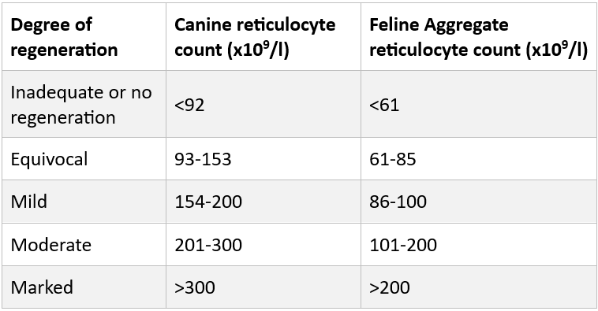
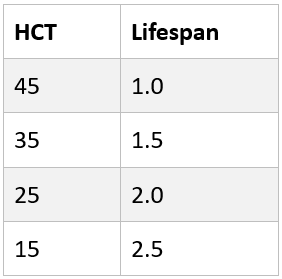

🟥 Метод
Диференциране на ретикулоцитите от други червени клетки с включения - Pappenheimer bodies, Hemoglobin H, Heinz bodies.
🟥 Формула
куче
котка
Брой еритроцити:
*за да ги изброиш, натисни върху еритроцита
{{ this.$formProperty.erythrocyteCounter }}

Брой ретикулоцити:
*за да ги изброиш, натисни върху ретикулоцита
{{ this.$formProperty.reticulocyteCounter }}

Брой еритроцити на пациента (10^12/L) =
Хематокрит на пациента (%) =
Ретикулоцити (%): {{this.$ui.reticulocytePercent}} %.
Абсолютен брой ретикулоцити: {{this.$ui.absoluteReticulocyteCount}} x 10^9/L.
Според абсолютния брой ретикулоцити, анемията се определя като: {{ this.$ui.degreeOfRegeneration }}.
Коригиран процент на ретикулоцитите (%): {{this.$ui.correctedReticulocytePercentage}} %.
Тип на анемията според Коригирания процент ретикулоцити: {{ this.$ui.typeOfAnemia }}
Продължителност на живот на ретикулоцитите: {{ this.reticulocyteLifespan }} дни.
Индекс на производството на еритроцити (RPI): {{ this.$ui.reticulocyteProductionIndex }}.
Ретикулоцитен индекс (RI): {{ this.$ui.reticulocyteIndex }} .
🟥 Информация за изследването
- Ретикулоцити (%)= [брой ретикулоцити/общ брой еритроцити] х 100. Тази формула показва дали има започваща еритропоеза, но не може да се прецени дали тя е адекватна спрямо нуждите на животното. При животните, които нямат анемия, ретикулоцитозата е показател за системно сърдечно или белодробно заболяване, бъбречна хипоксия или животното наскоро е претърпяло загуба на кръв, която е резултирала в ретикулоцитоза.
- Абсолютен брой ретикулоцити= [ретикулоцити (%) х общ брой еритроцити]. Това е методът, използван за определяне на адекватността на регенеративния отговор, тъй като взема предвид тежестта на анемията, но не прави предположения за „нормален“ хематокрит или коригиращи фактори за освобождаване на ретикулоцити.

- Коригиран процент на ретикулоцитите, CRP (%) = [хематокрита на пациента/нормална стойност на хематокрита] * абсолютен брой ретикулоцити (%). Анемията се счита за регенеративна, ако коригираният процент на ретикулоцитите е > 1% при кучета и > 0,4% при котки. Тази формула предполага, че нормалният хематокрит или PCV е 45% за куче и 35% за котка и не взема предвид времето за узряване на ретикулоцитите (или колко време отнема на освободени незрели червени кръвни клетки да узреят в кръвообращението).
- Индекс на производството на еритроцити (RPI)= коригиран процент ретикулоцити (%) / продължителност на живота на ретикулоцитите. Изчисляването на RPI взема предвид степента на анемия и скоростта на узряване на еритроцитите в кръвообращението. Това предполага, че прогнозираната продължителност на живота на ретикулоцитите е сходна при хора и кучета. RPI работи само при кучета. Стойности, по-големи от 1.0, показват повишено производство в отговор на анемия.

- Ретикулоцитен индекс, RI (%) = [хематокрита на пациента/нормална стойност на хематокрита] * абсолютен брой ретикулоцити (%) * 0.5. При RI >3% - регенеративна анемия. При RI 1-3% - полурегенеративна анемия. При RI >1% - нерегенеративна анемия.